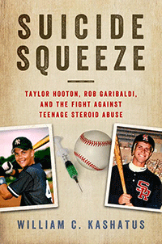

<body bgcolor="#FFFFFF" text="#000000" link="#0000FF" vlink="#CC0000" alink="#CC0000"><center><hr width="350" size="1" align="center" noshade>A heartbreaking story of steroids-related suicides by two promising young amateur baseball players that mobilized Major League Baseball's campaign against steroid use<hr width="350" size="1" align="center" noshade><p><a href="https://cdcshoppingcart.uchicago.edu/Cart/ChicagoBook.aspx?ISBN=&&PRESS=temple" target="_top">Buy this book!</a> | <a href="https://cdcshoppingcart.uchicago.edu/Cart/Cart.aspx?PRESS=temple" target="_top">View Cart</a> | <a href="https://cdcshoppingcart.uchicago.edu/Cart/Cart.aspx?PRESS=temple" target="_top">Check Out</a></p><p></p></center><!--none//--><h1 class = "booktitle">Suicide Squeeze</h1> <h1 class = "subtitle">Taylor Hooton, Rob Garibaldi, and the Fight against Teenage Steroid Abuse</h1>
<h3>William C. Kashatus</h3>
<p class="info">cloth: $35.00, Jan 17<BR>EAN:&nbsp;978-1-4399-1438-0<BR><font color=#990033>Available</FONT><font size=-7><br>&nbsp;</font></p><p class="info">e-book: $35.00, Jan 17<BR>EAN:&nbsp;978-1-4399-1440-3<BR><font color=#990033>Available</FONT><font size=-7><br>&nbsp;</font></p></p></td></tr></table>
<BR> <p class="info">256 pp<BR> 6 x 9<BR> 1 figs., 35 halftones <p class="info"><font size=-7>&nbsp;</font></p><p class="info">
</P><BLOCKQUOTE><p>
"Suicide Squeeze<i> sends an important message to baseball's youth and their parents. This book is about much more than the record-breaking, money, and ethics of the steroid era. Kashatus reveals how two families endured great tragedy and fought back-not only to change the game, but also to save a generation</i>."<b> --Johnny Bench,</b> Hall of Fame catcher for the Cincinnati Reds, 1967-1983
<br></BLOCKQUOTE>
<p>
Appearance- and performance-enhancing drugs-specifically, anabolic steroids (APEDs)-provide a tempting competitive advantage for amateur baseball players. But this shortcut can exact a fatal cost on talented athletes. In his urgent book <i>Suicide Squeeze</i>, William Kashatus chronicles the experiences of Taylor Hooton and Rob Garibaldi, two promising high school baseball players who abused APEDs in the hopes of attracting professional scouts and Division I recruiters. However, as a result of their steroid abuse, they ended up taking their own lives.<br>
<p>In <i>Suicide Squeeze</i>-named for the high-risk play in baseball to steal home-Kashatus identifies the symptoms and dangers of steroid use among teens. Using archival research and interviews with the Hooton and Garibaldi families, he explores the lives and deaths of these two troubled young men, the impact of their suicides on Major League Baseball, and the ongoing fight against adolescent APED use that their parents have been waging.<br>
<p>A passionate appeal to prevent additional senseless deaths by athletes, <i>Suicide Squeeze</i> makes an important contribution to debates on youth and sports and on public policy.
<br>
<P CLASS="top"><A HREF="#top">BACK TO TOP</A></P>&nbsp;<h2 class="inpageheading"><A NAME="excerpt"></a>Excerpt</h2><p>
<A HREF="http://www.temple.edu/tempress/chapters_2400/2434_ch1.pdf"><p>Read Chapter 1 (pdf). </A>
<br>
<P CLASS="top"><A HREF="#top">BACK TO TOP</A></P>
<BR>&nbsp;
<h2 class="inpageheading"><A NAME="reviews"></a>Reviews</h2>
<p>
"<i>The 2005 Congressional Hearing on Steroids in Baseball was the catalyst for Major League Baseball to implement the nation's toughest drug-testing program in professional sports. But what captured my attention most were the moving testimonies of Don Hooton and Denise Garibaldi, parents of sons who had turned to anabolic steroid use to achieve their ambitions as baseball players. William Kashatus's integration of the tragic stories of Taylor Hooton and Rob Garibaldi with the most recent research on appearance- and performance-enhancing drugs appeals to both our hearts and our minds. </i>Suicide Squeeze<i> is a timely and important book for parents, coaches, teachers, and everyone who cares about our nation's youth.</i>"-<b>George J. Mitchell</b>, U.S. Senator from Maine, 1980-1995, and author of <i>Report to the Commissioner of Baseball of an Independent Investigation into the Illegal Use of Steroids and Other Performance Enhancing Substances by Players in Major League Baseball</i>
<br>
<p>
<i>"</i>Suicide Squeeze<i> tells the compelling stories of Taylor Hooton and Rob Garibaldi-not only the tragic circumstances surrounding their deaths but also how they inspired Major League Baseball to join the fight against the use of steroids and other performance-enhancing substances among our youth. Together with the Hooton and Garibaldi families, Bill Kashatus has succeeded in putting a human face on this pressing national health issue.</i>"-<b>Allan H. "Bud" Selig</b>, Commissioner of Baseball, 1992-2015
<br>
<p>
<i>"</i>Suicide Squeeze<i> is a chilling account of undetected teenage steroid abuse that subjected two families to the greatest pain and horror any parent can imagine. It is a must-read for parents to fully understand that teenage steroid abuse is not limited to the athletes in the headlines.</i>"-<b>Stephen Keener</b>, President and CEO, Little League International
<br>
<P CLASS="top"><A HREF="#top">BACK TO TOP</A></P>&nbsp;<P>
<h2 class="inpageheading"><A NAME="contents"></a>Contents</h2><P><SPAN STYLE="font-family: 'Verdana';font-size: 13px;" >Preface<BR>List of Abbreviations<BR><BR>1. Confronting Baseball&rsquo;s Fallen Heroes<BR>2. For Love of the Game and Sons<BR>3. &quot;You Need to Get Bigger&quot;<BR>4. &quot;Mom, Come Look at My Guns!&quot;<BR>5. &quot;It&rsquo;s Just a Big Lie!&quot;<BR>6. &quot;Only God Can Hold Me Now&quot;<BR>7. USC's Baseball &quot;Family&quot;<BR>8. Fighting Back<BR>9. Losing a Son, Rebuilding a Family<BR><BR>Afterword<BR>Acknowledgments<BR>Taylor Hooton Foundation<BR>Notes<BR>Selected Bibliography<BR>Index</SPAN></P>
<P CLASS="top"><A HREF="#top">BACK TO TOP</A></P>
</P><BR>&nbsp;
<H2 class="inpageheading"><A NAME="author bio"></a>About the Author(s)</H2><p>
<b>William C. Kashatus </b>is a historian, a longtime educator, and an amateur baseball coach. A regular contributor to the<i> Philadelphia Inquirer, </i>he is also the author of several books on baseball, including <i>Jackie and Campy: The Untold Story of Their Rocky Relationship and the Breaking of Baseball's Color Line.</i>
<br>
<P CLASS="top"><A HREF="#top">BACK TO TOP</A></P>
<p><h2 class="inpageheading"><A NAME="subjects"></a>Subject Categories</h2><P><A HREF="/tempress/general.html" TARGET="_top">General Interest</a><BR><P><A HREF="/tempress/sports.html" TARGET="_top">Sports</a><BR><P><A HREF="/tempress/youth.html" TARGET="_top">Youth Studies</a></P></P>
</p>
<P>
</P>
<p align="center"><a href="https://cdcshoppingcart.uchicago.edu/Cart/ChicagoBook.aspx?ISBN=&&PRESS=temple" target="_top">Buy this book!</a> | <a href="https://cdcshoppingcart.uchicago.edu/Cart/Cart.aspx?PRESS=temple" target="_top">View Cart</a> | <a href="https://cdcshoppingcart.uchicago.edu/Cart/Cart.aspx?PRESS=temple" target="_top">Check Out</a></p><p><font face="Arial" size="1"><a href="copyright.html" onMouseOver="window.status='Web Copyright Policy';return true;" onMouseOut="window.status=''" title="Web Copyright Policy">&copy;</a> 2017 <a href="http://www.temple.edu" target="new" onMouseOver="window.status='Link to Temple University home page';return true;" onMouseOut="window.status=''" title="Link to Temple University home page">Temple University</a>. All Rights Reserved. http://www.temple.edu/tempress/titles/2434_reg.html</font></p>